Swift is the modern programming language behind many apps that run on modern Apple platforms. I thought it would be nice to bring a small taste of it back to Apple’s early days, the Apple II. It was Apple’s first mass-market series of machines, initially released in 1977 with a 1 MHz MOS 6502 CPU.
I built SwiftII, a Swift-flavored mini development environment for the original Apple II to a //e and up.
To be honest, I built it with heavy AI assistance in my spare time. I will be candid later how it helped because that workflow was as interesting to me as the retrocomputing work itself.
One big caveat, this is not modern Swift and will never be. The full Swift standard library will not fit on this machine. SwiftII is a deliberate subset, much closer in spirit to Embedded Swift than the SDK meant for modern platforms like iOS or macOS.
My goal was to fit as much of Swift into the Apple II as I can while still reading like Swift on sight. If you know Swift, you should be able to read a SwiftII-compatible program and immediately understand it.
Other than the interpreter, I want my user to still have a relatively good user/developer experience. Because of this, I also had to build a launcher, file selector and text editor due to limitations I encountered on the Apple II.
Contents
This post is quite long, so here are the main sections for you to jump straight to:
- The App
- Motivation
- Target Hardware
- The language
- The main constraint: 40,704 bytes
- Development setup
- How the language works
- Two families of binary
- “What you type” vs “what you see” vs “what is stored”
- Developing Swift on the machine itself
- The trouble with memory banking
- Why this project ships as 9x disks
- Testing too many machines
- How it was built with AI
- Try it
- Conclusion
The App
Boot the appropriate disk and you land in a launcher. You can select an interactive REPL, a file browser that runs .swift programs straight from the disk, a full-screen editor, all self-contained on one bootable floppy.
Here is a demo video of the app running on my original Apple II Plus.
It goes through booting the system, running some sample programs and usage of the file selector, editor, REPL and compiler. The compiler is on a separate disk from the REPL.
The original II Plus keyboard has no lowercase and no \ key, so the program is typed with digraphs. ??/ becomes \ which SwiftII interprets as canonical Swift. More on that quirk later.
Here are some sample screenshots:
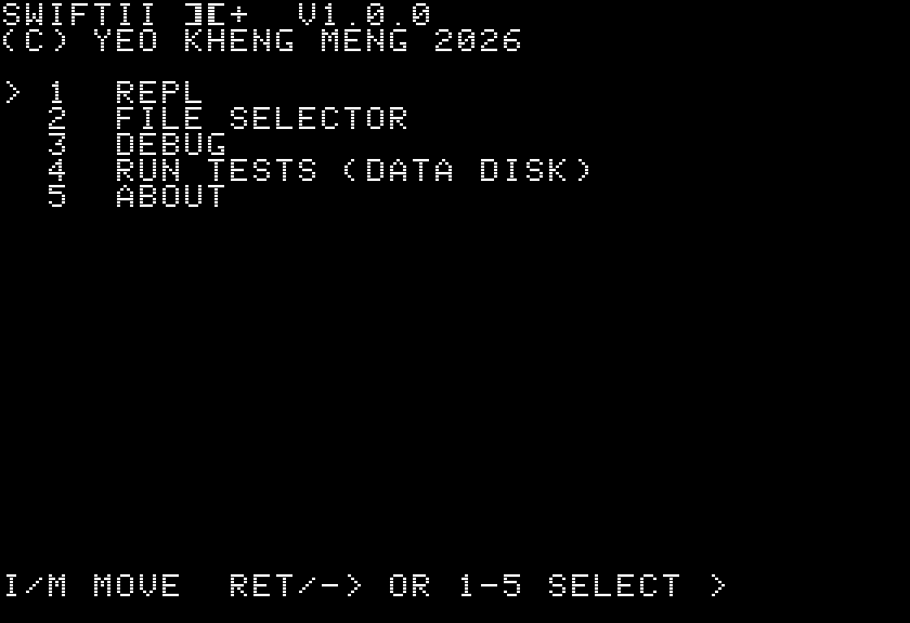 The boot launcher menu |
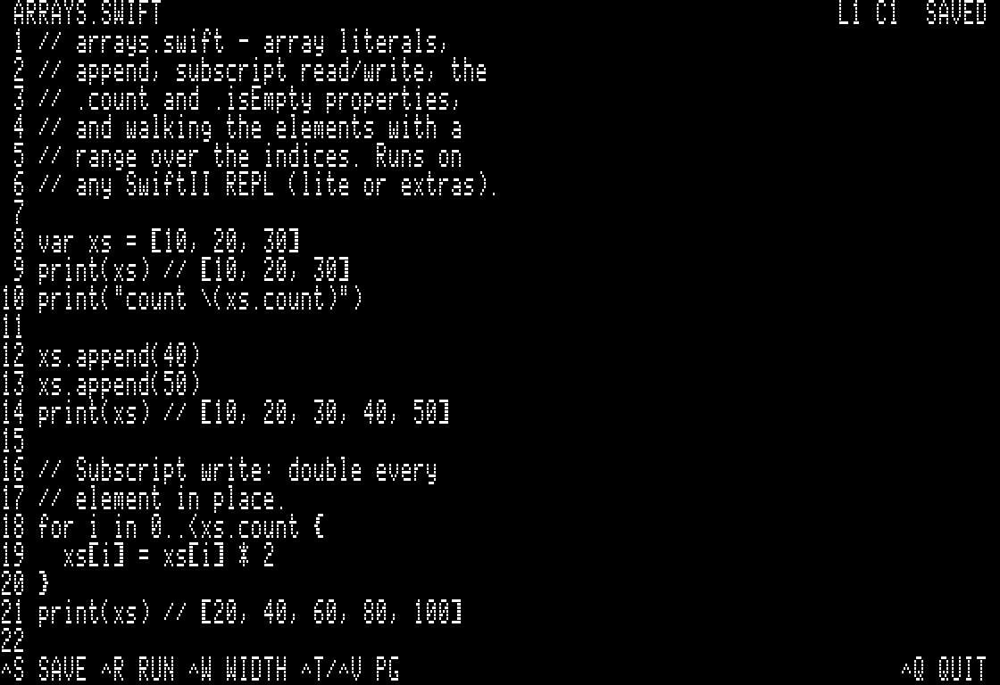 The full-screen editor (//e, 80-column) |
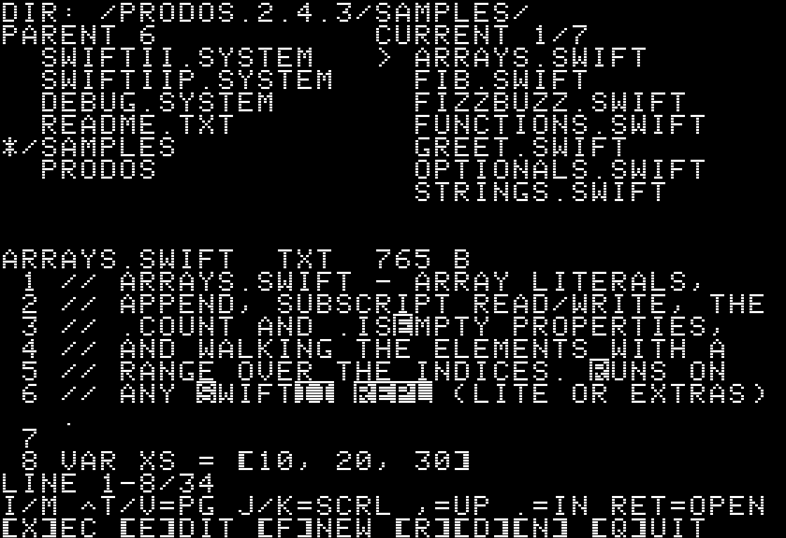 The file browser with a live code preview |
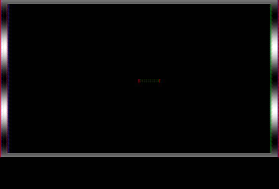 xsnake, a playable light-cycle game |
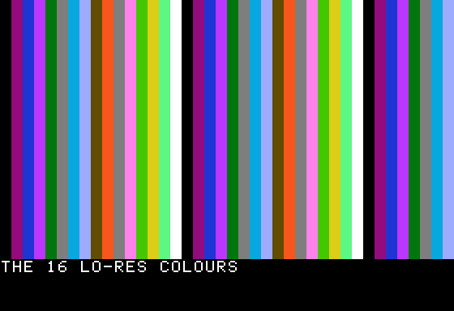 All 16 lo-res colours via gr / color / vlin |
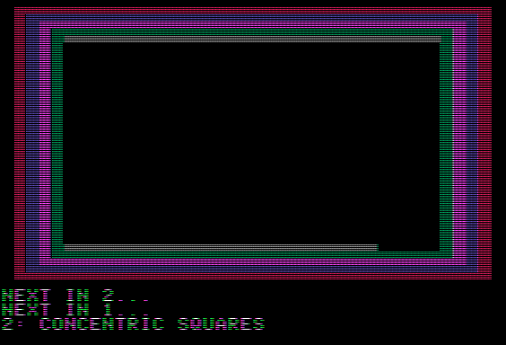 xgrdemo, a five-scene lo-res colour graphics showcase |
If you are too excited to continue reading and want to dive into the code and disk images, here is the GitHub repo https://github.com/yeokm1/swiftii.
Motivation
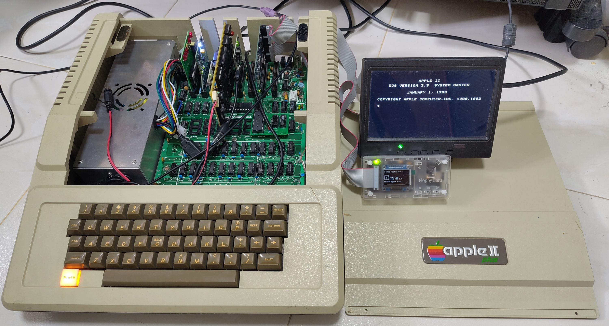
I recently restored an Apple II Plus that was generously donated to me. I wondered what modern abilities I can make it do.
Years ago, I wrote a DOS ChatGPT client and a Slack client for Windows 3.1. Those projects were about squeezing a modern network service into a vintage machine. This time I wanted to know if I can do the same for a modern programming language, one from Apple itself no less!
The inspiration for this app is Apple Pascal. Back in 1979, Apple Pascal brought the UCSD p-System to the Apple II. Rather than compile Pascal to native 6502 machine code, it compiled to bytecode that ran on a virtual machine similar to how Java does it.
I wanted to do the same for Swift. The compiler emits bytecode and a virtual machine (VM) executes it. Almost half a century apart, both languages reach the 6502 by avoiding native 6502 code generation through a VM.
I also wanted a Read–eval–print loop (REPL) tool so users can test their code in an interactive manner. The modern Swift SDK from Apple also supports this REPL function so I thought it’s reasonable to add that too.
Target Hardware
The baseline target is the original 1977 Apple II with appropriate hardware upgrades applied. If SwiftII runs here, it runs on pretty much any future Apple II.
The 1979 Apple II Plus in the photo above is an incremental iteration over the original Apple II with features like Applesoft BASIC, more RAM and disk Autostart. Otherwise, it is largely similar to the original Apple II.
My II Plus has the following high-level specifications:
- MOS 6502 CPU 1 MHz
- 48 KB main RAM
- Clone Saturn 128K RAM card (backward compatible as 16K Language Card)
- Clone Videx Videoterm 80-column card
- Yellowstone universal disk controller card (can emulate original Disk II mode)
- Floppy Emu to emulate Disk II drives
More details on my own Apple II Plus setup are documented here: https://github.com/yeokm1/retro-configs-apple/tree/main/apple-ii-plus.
The original 1977 Apple II is supported as long as it has been upgraded to 48 KB RAM plus a 16 KB language card giving the same 64 KB total. On a non-Autostart ROM machine you start the Disk II manually with C600G or PR#6.
The Apple //e is the nicer machine to use because it has lowercase support, a better display ROM and a proper ASCII keyboard. On a //e, you can type SwiftII source much more naturally instead of relying on the Apple II Plus digraph and input conversion layer which I will share more later.
I used ProDOS 2.4.3 because it is the modern still-maintained ProDOS 8 revival that is well documented and still runs on an original Apple II. Using a single ProDOS reference image also made the disk build and testing much simpler than supporting multiple DOS/ProDOS variants. A minimum 16K Language Card is mandatory for ProDOS.
The 6502 is an 8-bit CPU. Its A, X and Y registers are all 8 bits wide and there is no general-purpose 16-bit register. There is no floating-point unit and not even a hardware multiply or divide instruction. The hardware stack is only 256 bytes which limits function call depth.
As for memory, 64 KB is tiny by today’s standards more akin to a microcontroller.
The language
Here is a taste of what SwiftII looks like. If you know Swift, you should find this very familiar.
let answer = 42
var count = 0
let maybe: Int? = 5
if let x = maybe { print(x) }
let n = maybe ?? 0
while count < 10 { count += 1 }
for i in 0..<5 { print(i) }
func greet(name: String) -> String {
return "Hello, \(name)!"
}
var xs = [1, 2, 3]
xs.append(4)
print("\(xs.count) items")
SwiftII supported features
The core (lite disks) reads exactly like Swift:
letandvarwith type inferenceif/else if/else,whileandfor-inover ranges- Short-circuit
&&/||and prefix! - Top-level functions with
return - Optionals with
if let,??and force-unwrap! - Arrays with
append,count,isEmptyand subscripting - Strings with
+concatenation,\(...)interpolation andString(n)
Beyond that, additional capabilities depend on which disk you boot:
- the extras (sat/aux) disks add integer parsing (
Int(s)), byte/string helpers (asc,chr), more array methods (removeLast,removeAll,contains),peek/poke, cursor/text control and lo-res graphics (gr,color,plot,hlin,vlin); - the Family B compiler disks go further with
switch,for-indirectly over arrays,random(in:), speakertoneand file I/O.
So the same source can be a compile error on one disk and run fine on another depending on which features you try on which disk.
Where the types differ from Swift
Types behave differently from conventional Swift:
-
Intis 16-bit and signed due to the cc65 limit. It ranges −32768 to 32767. (Conventional Swift is 64-bit on modern systems) It is also the only numeric type, noDoubleand noFloat. I will cover more on this in the section below. -
Stringis just bytes, not Unicode. Modern Swift treats a string as a collection ofCharacterobjects. SwiftII strings are ASCII byte sequences, closer to C-style string arrays. -
Items in arrays have to be all the same type.
-
Identifiers are capped at 11 characters to save space. A longer name is a hard compile error rather than a silent truncation so two long names can never collide on a shared prefix.
There are also no closures, no dictionaries, no error-handling or throws, no concurrency (async/await), no macros and no call-site argument labels. Each would cost memory or single-pass compiler complexity the machine obviously cannot spare.
The main constraint: 40,704 bytes
To understand the memory budget, you first have to understand the Apple II’s memory map. The 6502 can address 65536 bytes with its 16-bit address bus. SwiftII runs under ProDOS as a SYS binary, which starts at $2000.
SwiftII binaries are SYS programs and do not leave room for BASIC.SYSTEM above it. So the practical load-image ceiling is the contiguous range from $2000 up to the ProDOS global page at $BF00 -> \$2000-$BEFF.
I got AI to help me to draw up this infographic.
That region is exactly 40,704 bytes. It is the entire main-RAM my binary can use.
Memory beyond 64K
64KB is just enough to run core features of SwiftII but is not sufficient for more functions or bigger programs. However, memory beyond 64 KB is not directly addressable.
Memory upgrades of that time period like Saturn 128K card or the //e’s 64K of auxiliary RAM does not extend the address space like modern linear memory. It sits behind a window and software banks pieces of it in and out through soft switches. If you come from the DOS PC world, it is conceptually similar to Expanded Memory Specification (EMS). The extra RAM is there, but the CPU can only see the selected page at the selected address range.
On the Apple II this is especially awkward because the language-card window is also where ROM, ProDOS ProDOS Machine Language Interface (MLI) code also lives. Only one bank can be visible there at a time.
I will come back to this topic later.
Development setup
The entire project is written largely in C90 and is compiled in two ways:
- clang on my Mac for the unit tests.
- cc65 for the Apple II where it actually ships. cc65 is a C cross-compiler for 6502 systems.
Why C and not Assembly? Getting AI to write in Assembly or directly into machine code binary itself could probably squeeze out more efficiency gains. But a project filled with 6502 assembly would be much harder for me to inspect and change directly.
C keeps the project at a level where, if the AI tools are wrong/unavailable or I have to debug the last mile myself, I can still understand and modify the code in a feasible way. I think the tradeoff is justified.
How the language works
A SwiftII program flows through a conventional-looking pipeline:
Swift source ---> lexer ---> compiler ---> bytecode ---> VM ---> output
(tokens) (Pratt) (.swb)
Most language implementations parse source into an Abstract Syntax Tree (AST) then walk that tree to generate code. However SwiftII cannot afford the tree as there is no memory to hold one.
Instead it uses a single-pass Pratt parser that emits bytecode directly as it reads the source. There is no intermediate representation. This is inspired by Robert Nystrom’s book Crafting Interpreters.
(Given the complexity of this section and to ensure accuracy, I got AI to significantly draft and vet this and following subsections)
From source text to bytecode
For readers who have not written a compiler before, the important point is that SwiftII does not “understand” the whole program at once. It reads a token, decides what small piece of language it is looking at then appends VM instructions to a byte buffer.
Take this line:
let x = 1 + 2
The lexer first turns the characters into a stream of tokens:
LET IDENT(x) EQUAL INT(1) PLUS INT(2) EOF
The statement parser sees LET, so it knows it is compiling a variable declaration. It records x in the globals table, then asks the expression parser to compile the right-hand side.
The expression parser is where Pratt parsing helps. Each operator has a precedence. When it sees 1 + 2, it emits “push 1”, sees +, notices that + binds to the next value, emits “push 2”, then emits “add”. There is no BinaryExpr(left: 1, op: +, right: 2) object sitting in memory. The output bytes are produced as the parser goes:
source fragment bytecode emitted
--------------- ----------------
1 OP_INT_U8 1
2 OP_INT_U8 2
+ OP_ADD
let x = ... OP_DEFINE_GLOBAL #0
The VM is a stack machine. So this bytecode pushes the operands, runs an opcode that pops them, pushes the result then stores the result into global slot 0.
Top-level functions are also just bytecode ranges. When the compiler sees func greet(...), it records the function’s start offset, parameter count and return flag in a small function table, then emits the function body into the bytecode arena. A later call does not carry a function pointer, it carries the function-table index.
Strings take a slightly different path. The compiler copies each literal into the constant heap and emits OP_STR <offset>. Therefore the .swb file has to carry both bytecode and the constant pool. The instructions say “load the string at heap offset N” and the runner must recreate the same constant heap layout before executing the program.
What the bytecode actually looks like
Each instruction is 1 byte of opcode followed by 0 to 2 bytes of inline operand. There are no multi-byte opcodes or prefixes.
The opcodes are grouped by rough function: constants, stack manipulation, variables, arithmetic, comparison, control flow, calls, optionals and heap objects. The upper range is left reserved for things SwiftII does not have yet, such as closures, structs, dictionaries, classes and protocols.
Here is let x = 1 + 2 followed by print(x), assuming x is global #0 and print is builtin #0, compiling to twelve bytes:
03 01 OP_INT_U8 1 ; push the small int 1
03 02 OP_INT_U8 2 ; push the small int 2
30 OP_ADD ; pop two, push their sum
22 00 OP_DEFINE_GLOBAL #0 ; bind it to x
20 00 OP_GET_GLOBAL #0 ; push x back
63 00 01 OP_CALL_BUILTIN print, argc=1
Because the single-pass compiler does not track operand types deeply, several opcodes are polymorphic at runtime. OP_ADD does integer addition when both operands are ints, but dispatches to heap string concatenation when both are strings, so the language gets "a" + "b" without a second concat instruction.
String interpolation works the same way, one opcode inspects the value’s tag and renders an Int, Bool or nil to text.
No floating point at all
SwiftII has no Double, no Float and no decimals anywhere. Int is a 16-bit signed integer and that is the only numeric type available.
The cc65 compiler itself does not support float. The 6502 CPU itself does not support float. Adding in a float library would severely bloat the binary size.
On a side note, Apple’s own Embedded Swift, the trimmed-down dialect aimed at microcontrollers, also treats floating point carefully. For a long time you could not even print a Double, because the standard-library routine to do so was not available. That was only filled in with an all-Swift implementation in Swift 6.3.
If even constrained Swift treats floating point as something to handle carefully, an Apple II from the 1970s would face more difficulty.
Applesoft BASIC that comes with the II Plus does support float through its floating point routines. However this was done by holding it directly in the ROM which I cannot do. I also understand its floating point performance on the Apple II is not that good too.
Two families of binary
The same source tree ships as 2 families of binary.
The reason is the design and usage of Apple II’s 16 KB language card which lives at \$D000-$FFFF. ProDOS keeps its MLI in that same region.
-
Family A contains the REPL. To fit, the interpreter spills cold code into the language card. This overwrites the ProDOS MLI, so Family A cannot do general file I/O after the interpreter starts. It can run programs staged by the launcher but it cannot freely open and read arbitrary files.
-
Family B contains the compiler plus runner. These are MAIN-only tools, so they leave the language card free and the ProDOS MLI stays alive.
Both family disks contain the launcher which integrates the file browser and editor.
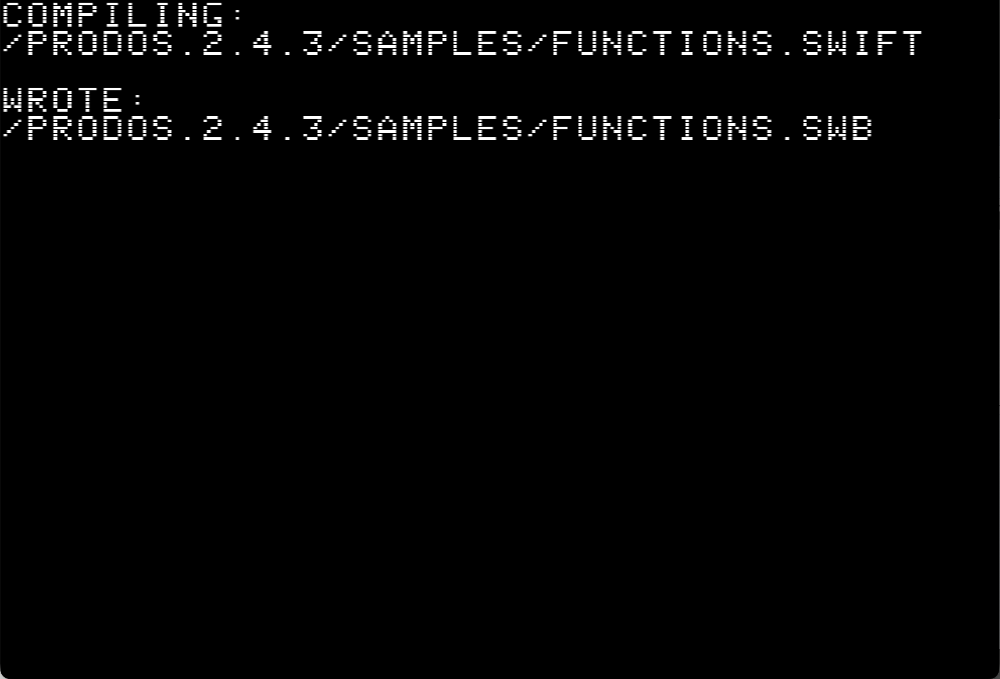 |
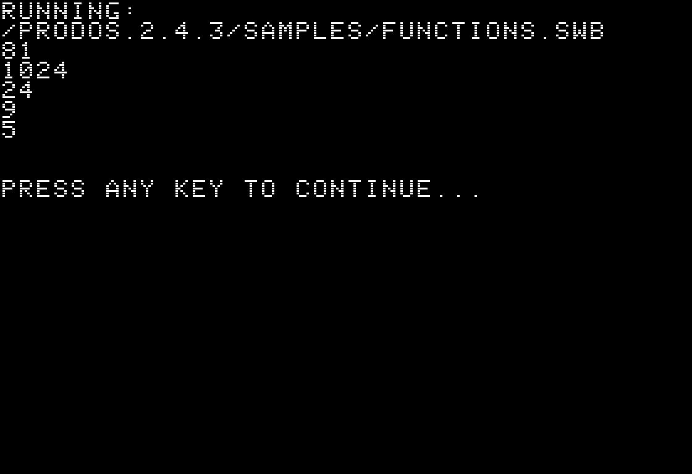 |
The Family B compiler reads in a .swift source file and emits .swb bytecode onto disk for the runner to execute.
The .swb file has a 12-byte header (the three-character magic SWB, a one-byte format version, the entry program counter and the section lengths), followed by bytecode, the constant pool and a 4-byte record per function.
Family B itself ships in four disks across three tiers depending on how much spare RAM the machine has.
| Tier | Machine | Max total bytecode |
|---|---|---|
| Tier 1 (flat) | II Plus 64K or //e | 1,834 bytes |
| Tier 2 (Saturn) | II Plus + Saturn 128K | ~36 KB |
| Tier 3 (aux) | //e + 64K aux | ~36 KB |
On a stock machine you get 1,834 bytes of bytecode. To go bigger, a Saturn 128K or //e 64K auxiliary RAM card (such as 80-column Extended Text card) is used to page completed function bytecode bodies out of main memory and into spare RAM.
The extra capacity mostly helps function-heavy programs, since each individual function and the top-level main still have to fit a resident window.
Why quitting the REPL reboots the machine
If you watched the above video carefully, you would notice that upon quiting the REPL, the system has to go through a reboot process before going back to the launcher menu.
This looks heavy-handed, but it is forced. To return to the launcher properly, the REPL would have to read the launcher’s SYS file from disk and jump into it. Reading a file requires the ProDOS MLI, but the REPL has overwritten the MLI with its own code. The MLI routine needed to load the next program no longer exists in memory.
The full-screen editor is compiled into the launcher rather than being a separate program. The launcher is Main-only and keeps the ProDOS MLI alive, so the editor can open and save .swift files directly.
Since the file selector and editor are still the same running program, moving from browser to editor and back is much faster than chaining a separate SYS file each time.
- Ctrl-Q returns to the file browser with no reboot.
- Ctrl-R saves your file, stages the source, chains the interpreter to run it
“What you type” vs “what you see” vs “what is stored”
On modern computers, three things are usually the same.
- what you type on the keyboard
- what you see on screen
- what gets stored in the file
You press [, a [ appears on the display and the byte for [ lands in the file. On the original Apple II and II Plus, those three paths diverge.
The II/II+ keyboard produces only uppercase and lacks keys for characters Swift needs. The display has only the original character ROM glyphs, so it cannot draw lowercase or braces directly. The file on disk, however, still needs to be normal ASCII SwiftII source so the same .swift file works no matter which Apple II wrote it.
SwiftII therefore keeps storage canonical and translates at the edges on display and keyboard.
| You type (on a II Plus) | You see on screen | Stored on disk |
|---|---|---|
PRINT |
PRINT (normal video) |
print (lowercase) |
'INT |
inverse-video I, then nt |
Int |
<: :> |
[ ] |
[ ] |
??/ |
\ |
\ |
<% |
<% |
{ (Single byte 0x7B) |
The next two sections describe the input and output sides of that translation.
Typing Swift on a 1977 keyboard for II and II+
Conventional Swift comprises mostly of lowercase ASCII and punctuation. The II/II+ keyboard cannot type lowercase, backslash, { } [ ], _ or backtick.
So SwiftII puts an input translation layer between the keyboard and the saved file. It auto-lowercases letters, uses ' as a one-shot uppercase marker ('' for a full word), maps Ctrl-W to _ and borrows the C-standard digraphs and trigraphs for missing punctuation.
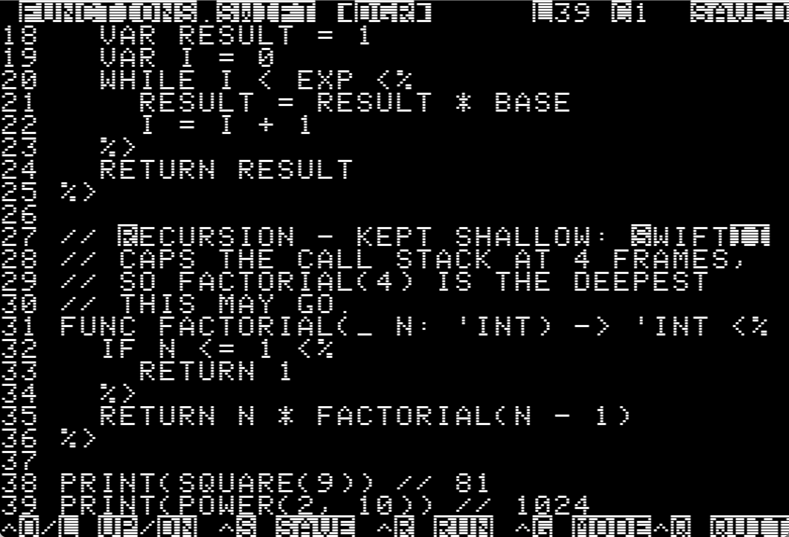
In the screenshot, 'INT becomes Int in storage and inverse video marks actual uppercase letters where the II Plus cannot draw lowercase shapes. The same rule handles camelCase too. readLine is typed as READ'LINE and a double '' marks a whole run of capitals at once.
That apostrophe marker is important because Swift mixes upper and lower case inside identifiers. A type like Int is typed 'INT and String is typed 'STRING.
On a //e with a normal keyboard, you type the program as-is. The .swift file on disk is the same regardless of which machine authored it.
Text Display on the Apple II
If there is one part of this project where the effort outweighed what users actually see, it is putting characters on the screen.
I had to keep in mind 4 different output paths to interface the display, character set and column count.
| Path | Machine / mode | How SwiftII displays text |
|---|---|---|
| Pre-IIe 40-column | Original Apple II / II Plus | Lowercase becomes normal uppercase, uppercase becomes inverse-video uppercase and missing glyphs such as { are displayed as digraphs like <%. |
| Videx 80-column | II Plus with Videx Videoterm | Supports all display characters. |
| //e 40-column | Apple //e text mode | Supports all display characters |
| //e 80-column | Apple //e with 80-column firmware | Supports all display characters |
For the pre-IIe 40-column screen, the necessary translation from canonical Swift to uppercase, inverse colour conversion and digraphs have to take place.
The way to handle the 4 screen types are not the same even for those that support all display characters but it’s too much to cover here.
Developing Swift on the machine itself
For a development environment to be useful, one cannot just write the interpreter. There needs to be a means of file handling as well as to edit the files.
These tools did not exist in a satisfactory way for me on this machine so I had to build them.
Both exist inside the same launcher binary so they can get file access and a reboot-free return to the main menu.
The file browser
The file browser is a small three-pane file manager. The left pane shows the parent directory for context, the right pane is the current directory with the cursor highlight. A details line reports each entry’s ProDOS type and size.
Bottom pane is the preview. When the user dwells the cursor for at least 1.5s, the pane will display a scrollable preview of the file. The delay reduces unnecessary disk reads. The pane renders .swift source with exactly the same case and digraph rules the editor uses, so a program looks identical whether you are previewing or editing it.
Because the II Plus keyboard has no up/down arrow keys, navigation uses I and M for up and down.
The editor
The REPL takes one line at a time, which is fine for trying some short expressions without saving but infeasible for writing a real multi-line program. So I need a proper editor that is aware of the digraph and case limitations and is able to save canonical Swift to disk.
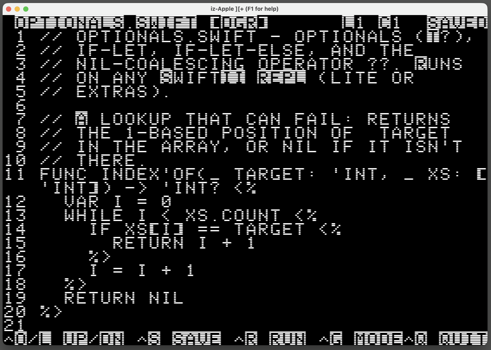 Cooked / DGR mode: Digraphs and case markers |
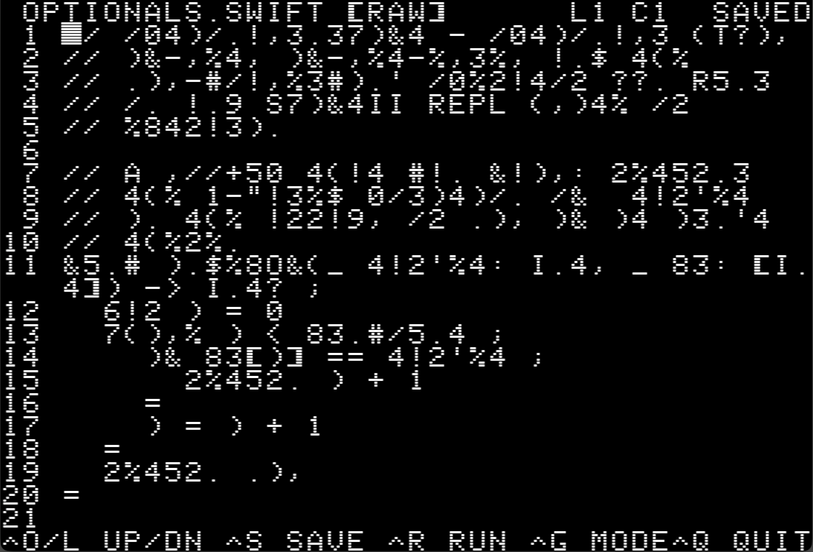 Raw mode: Shown on II+ that cannot display lowercase |
It has a cooked mode and a raw mode. A .swift file opens “cooked” with the digraph and case-marker support. A plain text file opens in “raw” mode because the typing model is a Swift-source convention that would only mangle a normal README file.
Ctrl-G flips between them, reloading the file so what you see and what is stored stay consistent. A [DGR] or [RAW] tag on the top status line tells you which mode you are in.
The cursor is careful about the display mismatch from earlier. A { is one byte in the buffer but shows as <%, two columns wide on a II (Plus). Arrowing across it moves one byte at a time in memory even as the cursor visibly jumps two columns with a digraph-aware width calculation watching the column maths.
The key bindings deliberately follow Apple Pascal style for familiarity:
| Action | Key Binding | Notes |
|---|---|---|
| Move Left / Right | Left Arrow / Right Arrow |
II+ keyboard has this |
| Move Up | Ctrl-O |
Standard UCSD / Apple Pascal |
| Move Down | Ctrl-L |
Standard UCSD / Apple Pascal |
| Save | Ctrl-S |
|
| Save and Run | Ctrl-R |
|
| Quit | Ctrl-Q |
Drops back to the file browser |
On a IIe with no similar display limitations, everything can be displayed as-is.
The trouble with memory banking
This memory banking caused a lot of pain.
The Apple II does not treat extra RAM as one larger flat address space. The 6502 can only address 64 KB so extra memory appears by replacing \$D000-$FFFF with another physical backing. It can hold:
- Motherboard ROM
- ProDOS’s MLI code
- SwiftII’s language-card code
- Selected Saturn bank
That makes banking both useful and dangerous. It gives SwiftII somewhere to put code that will not fit in main RAM but it also means a routine can accidentally hide the ROM or ProDOS MLI code it is about to call.
The Family A REPL is far larger than what can remain resident in main RAM so some cold code has to be banked.
Main RAM below $C000 remains visible but code in the \$D000-$FFFF language-card window depends on the current bank state. So every call into or out of that window needs a carefully managed bank switch.
The split of what code is in main RAM or banked is based on my expected execution frequency. I classify the cold code as graphics, peek/poke etc. These are parked into the Saturn 128K card or the //e’s 64K of aux RAM.
The two cards need different methods to utilise the banked data:
- Saturn bank-select allows code in the banked window to execute in place from the card.
- //e’s aux RAM code cannot run in place so the cold code has to be first copied into a main-RAM staging buffer and run from there.
Family B’s compiler and runner use the same spare RAM differently to store bytecode. The runner streams through a small main-RAM window as it executes rather than running in place.
All of this is transparent to the SwiftII programmer.
Why this project ships as 9x disks
All of these constraints result in one outcome, SwiftII is not a single download. It is 9x disk images and the reasons trace straight back to the sections above.
As mentioned previously, memory limits constrain which features can be banked.
A Family A REPL overrides the ProDOS MLI IO functions but the Family B compiler-runner needs them to read/write bytecode to disk. So both cannot be same binary because one evicts ProDOS and the other needs it.
So the release is 4x Family A REPL disks, 4x Family B compiler disks and 1x shared data disk.
Family A: REPL
| Disk | For | Features |
|---|---|---|
iip-lite-repl |
any II / II Plus (64K) | core-language REPL, editor and file browser |
iip-sat-repl |
II Plus with a Saturn 128K card | core + graphics, peek/poke and 80-column via Videx if fitted |
iie-lite-repl |
//e | core + native lowercase and 80-column text if fitted |
iie-aux-repl |
//e with 64K aux RAM | core + graphics, peek/poke and 80-column text if fitted |
Family B: Compiler and Runner
All 3x disks compile a .swift file to a .swb bytecode file and then run it and they share the biggest feature set in the project. On top of everything in Family A, they have:
- file I/O:
readFile,writeFile,appendFile,listDirectory switchfor-inover arraysrandom(in:)- sound:
tone - timing:
wait - Numeric functions:
abs/sgn - string functions:
hasPrefix/hasSuffix
The four disks differ only in how large a program they can hold which is determined by where the bytecode is stored.
| Disk | For | ~Bytecode size |
|---|---|---|
iip-compiler |
any II / II Plus | 1.8 KB |
iip-sat-compiler |
II Plus with a Saturn 128K card | 36 KB |
iie-compiler |
//e | 1.8 KB |
iie-aux-compiler |
//e with 64K aux RAM | 36 KB |
The eighth disk is data, it contains sample programs and the test suite mounted in drive 2 alongside any of the above.
I thought of auto-detecting the machine at boot and adapt to every configuration. I deliberately did not, for two reasons.
-
It is not the 1970s anymore. Shipping eight
.pofiles costs nothing, whereas an extra physical floppy in that era would have been costly. The old reason to force everything into one disk is gone. -
I do not own most of these machines. So an adaptive runtime path would be code I could never fully verify.
Testing too many machines
Everything above explains why testing became its own substantial project. Each of the eight images targets a slightly different machine.
- Original Apple II (Plus) with 16K language card
- II Plus with Saturn
- II Plus with Saturn and Videx 80-column
- //e
- //e with auxiliary RAM in 64KB Extended 80-Column Text Card
A single make ci runs the plain C unit tests, builds all eight disk images and checks every binary against its size budget.
The plain C unit tests are logic tests that run on my modern host Mac but we still need to run the software on actual or emulated 6502 systems with ProDOS for verification.
Instead of launching the emulator one by one with each hardware and disk configuration and checking it by hand, I decided an automated acceptance harness is necessary. It drives the entire UI flow under a headless build of izapple2, a portable Apple II Plus///e emulator written in Go.
One command sweeps the hardware matrix, boots the right emulated machine, injects keystrokes, scrapes the screen and reports pass/fail.
The acceptance harness drives the full suite across emulated Apple II configurations in about half an hour.
How it was built with AI
SwiftII was built with heavy AI assistance, mostly Claude Code (Opus 4.8) and Codex (GPT 5.5).
For context, I did the project in my spare time over a 2-month period, using the entry-level Claude Pro and ChatGPT Plus plans rather than the more expensive tiers.
Without AI, this project would not have been feasible for me as a hobby project.
By hand at a similar standard, I think this would have taken well over 2-3 years work on the side or more.
The following rules and calls were AI-generated from my repo history.
The ground rules
I set up some initial rules with AI’s help and fine-tuned them.
- The budget is real. Code that works but is twice as large as it needs to be has still failed. The binding target is always the 64 KB II Plus and every feature is costed in bytes.
- Write the design doc first. Any non-obvious choice, zero-page allocation, value representation, bytecode format, banking scheme, had to be written up with alternatives and costs before code.
- Bring me a decision with options, not an open question. “How should I do this?” is not.
- Try a feature, measure its real memory cost and drop it if it isn’t worth it.
The calls that were mine
My highest-leverage moments were usually architectural or about scope:
- Ship one disk image per machine, not a runtime probe. The AI had built a machine-detection scheme. I killed the approach because I cannot verify a probe on hardware I do not own. I’m not sure how accurate emulators are to this. In 2026 shipping more
.pofiles costs nothing. - Floating point is not worth it. The AI actually got floating point working. But I cut it because it further reduced my already limited heap for a feature very few demos needed.
- Hot code in main RAM, cold code in the bank. I controlled what stays resident in main RAM and what gets banked.
- Raise the heap on the Saturn and aux tiers. Those machines have spare RAM, so spend some of it giving real programs more room to allocate rather than leaving it idle.
- Move features to the right family. Whenever the AI started contorting the lite REPL to do something the compiler does better, the answer was to move the feature, not to cram it in.
- Apple Pascal key bindings. I pulled the editor back to the familiar UCSD conventions after the AI invented its own clever scheme nobody would recognise.
- Testing on more than one emulator: I tested on both Mariani and izApple2 emulators to not overfit my program’s behaviour to one emulator in case there are individual emulator bugs or quirks.
Claude and Codex did different jobs
I leaned on two AI tools and they were useful in different ways.
Claude Code was stronger at greenfield work, initial architecture and scaffolding. The flip side is that it ran out of usage faster. It sometimes slipped during implementation and did not always keep every relevant design document in sync. I find that Claude is willing to push back on decisions or design choices that it deems to not be optimal.
Codex was faster, more literal in following my instructions and useful as a checker over work already done. It was also better and more succinct at documentation, so it helped keep the written record tidy.
The rough division that emerged was Claude for initial structure and hard greenfield pieces, Codex for fast execution, verification and documentation cleanup.
Why autonomous mode kept tripping here
Fully auto or trying to single shot the project did not work well here. I suspect it’s because the architecture decisions are highly unusual. I’m sure development information for vintage computers especially one for an almost half-century Apple II is relatively thinner in the training data than modern web or app development.
So I managed the AI carefully. Plan first, approve or redirect, then edit. The AI could move fast, but I had to keep pointing it back at the limitations and what I really wanted.
The documentation as the AI’s memory
One more workflow detail mattered a lot and it was AI’s limited context windows and session boundaries.
A coding AI can only hold so much in its context window at once and when a session ends, it forgets everything. The next session starts cold with no memory of why a decision was made previously.
The solution was to make the project’s documentation the durable memory that the AI itself lacks. SwiftII was built as 18 numbered phases, 0 through 17, each a self-contained goal with a written record of what it was for and what shipped. The key milestones:
- Phases 0–1 - scaffolding, then the real lexer, single-pass compiler and bytecode VM, with
1 + 2printing3end to end on both the host and the Apple II. - Phases 2–3 - the interactive REPL, then strings and control flow, which also settled the pre-IIe keyboard and display model.
- Phase 4 - functions, optionals and arrays: the point where it starts to feel like Swift.
- Phase 8 - hardware-capability detection and the multi-binary build matrix, the root of the lite-versus-extras split.
- Phases 11–13 - the //e aux extras binary, 80-column text and running
.swiftprograms straight off a disk. - Phases 14–15 - the in-launcher editor and the data disk, then the Family B on-disk compiler and runner for programs too big for the REPL.
- Phases 16–17 - stretch features (
switch,random,tone, paged bytecode, Videx 80-column) and the polish-and-ship pass for v1.0.
Around the phases sit roughly 20 numbered design documents, each capturing one non-obvious decision. What was chosen, what the alternatives were and how it was done. The most useful ones you can consider reading are:
- 003 - the Apple II Plus typing model (auto-lowercase, case markers, digraphs).
- 011 - banking the extras into a Saturn card or //e aux RAM (the XLC trampoline and copy-down).
- 013 - 80-column text on the //e firmware and the II Plus Videx.
- 015 and 016 - the Family B compiler/runner toolchain and the streaming source window.
- 018 - the on-target, self-advancing test harness.
I treated those as handoff documents. When a fresh session starts or when I switch tools, it reads the roadmap, the relevant design docs and the lessons. That is how a brand-new context window inherits accumulated judgement instead of re-making old mistakes. The phased structure also keeps each unit of work small enough to fit in one session.
As the codebase and documents became bigger, each session had to load more context just to get oriented, so token budget became a real workflow constraint. The documentation helped both me and the AI to keep only the most important information “in context” for the task at hand.
Try it
The easiest way to try SwiftII is in an emulator, no toolchain required. Download a disk image (.po) from the GitHub Releases and open it in an Apple II emulator: Mariani on macOS, AppleWin on Windows, or izapple2 which is cross-platform. Start with swiftii-iip-lite-repl-vX.X.X.po for the broadest compatibility.
If you have real hardware, each disk is a standard 140 KB ProDOS 5.25" image. Write the appropriate disk for your system to a floppy with ADTPro or run it from a floppy emulator like a BMOW Floppy Emu. The original Apple II from 1977 runs it too, as long as it has been upgraded to 48 KB RAM and a 16 KB Language Card.
If you want the toolchain, the repo builds the whole disk set from source with cc65. You can also cross-compile a .swift to a .swb on your Mac and run it on the Apple II.
Conclusion
In the end, this was a labour of love and a nod to the legacy of the Apple II and Apple Pascal. Almost 50 years ago, Apple Pascal proved you could run a high-level language on tiny hardware by compiling down to bytecode. SwiftII is just my attempt to apply that exact same philosophy to a Swift-like language.
A huge portion of the architectural credit goes to Robert Nystrom, the VM implementation is heavily adapted from his phenomenal Crafting Interpreters book. Equally important is the cc65 project, whose 6502 C cross-compiler made this entire endeavour technically viable.
Massive thanks to Steve Wozniak for the Apple II. By designing it with an well-documented, open expandable architecture, he didn’t just contribute immensely to the home computer revolution, he built a timeless machine that continues to teach us about fundamental, bare-metal computing almost half a century later.
There is something deeply poetic about taking a language created by modern Apple and bringing it full circle back to the 8-bit hardware where the company began. The Swift team really did well by designing a language elegant enough to make this experiment even remotely feasible on such old hardware.
I would like to thank the creators of the Apple II emulators izapple2 and Mariani which allowed me to test the project on my modern host Mac. Without which there is no easy way to iterate through the project development.
It’s a nice little perk that ProDOS allows 15-character filenames. You don’t have to squash everything into an archaic DOS 8.3 format for example, meaning you can actually use the real .swift extension. It’s a small detail but something worth pointing out.
I’m amazed at what can still be accomplished for vintage systems with AI tools and a persistent human. A one-person hobby project of this size simply was not feasible a couple of years or even months ago.
I hope you enjoyed reading this as much as I enjoyed building it. I dedicate this project to Steve Wozniak and the Swift team at Apple.
There is only so much technical detail of this project that I can cover in this blog post without making it too long. If you are keen to know more, the full documentation can be found at the SwiftII repository’s docs directory.


{kind=link}
{kind=link}
{kind=link}
{kind=link}
{kind=link}
{kind=link}
{kind=link}
{kind=link}
{kind=link}
{kind=link}
{kind=link}
{kind=link}
{kind=link}